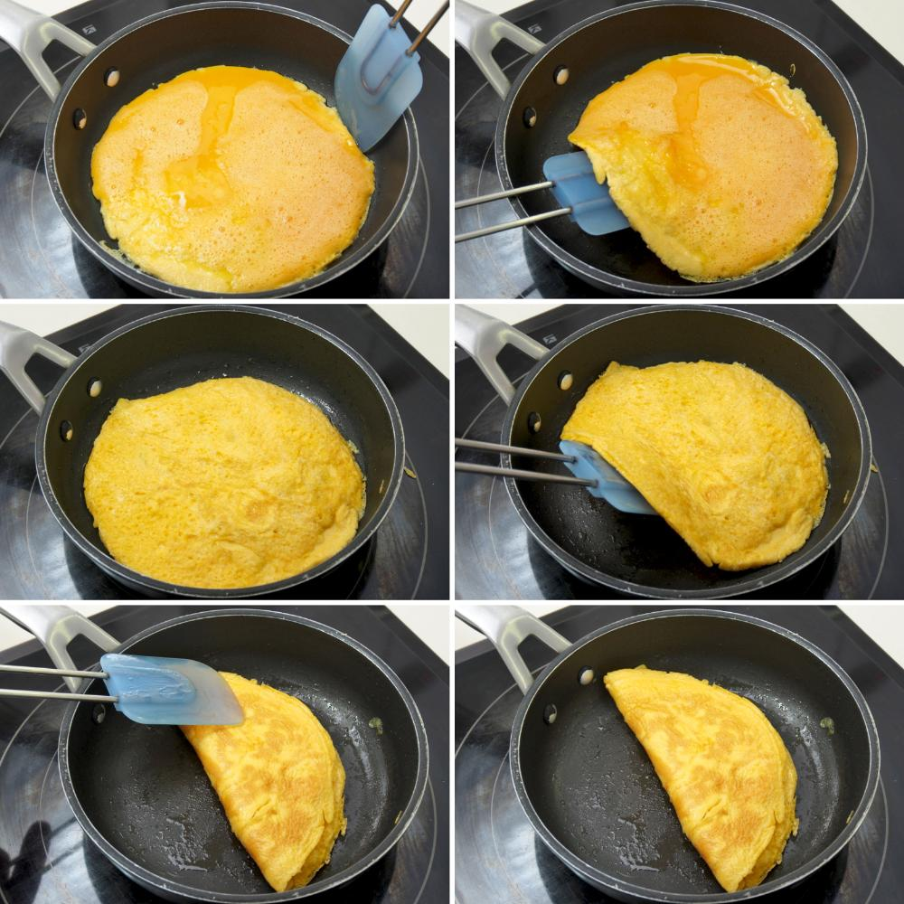

Hoy les presentamos esta receta super fácil y rápida para un desayuno riquisimo!
Ingredientes:
- Huevos 2
- Manteca 15g
- Perejil Deshidratado
- Pimienta
- Sal
Pasos:
- Rompemos los dos huevos dentro de un vaso.
- Le agregamos a los huevos sal, perejil y pimienta a gusto.
- Batimos energeticamente con un tenedor hasta que no se distingan las claras.
- Ponemos una sartén a fuego alto y le echamos la manteca, dejamos calentar.
- Echamos los huevos batidos y cubrimos todo el fondo del sartén sin dejar de moverlo.
- Pasados unos segundos nos ayudamos con una espatula para doblarla y dejamos dorar un poco.

- Sirvela en un plato y disfruta de este riquisimo desayuno.
Nuestra recomendación:
Una genial alternativa y recomendación propia, es agregar dentro de la tortilla, una buena cantidad de jamón.
 TusRecetas.com
TusRecetas.com